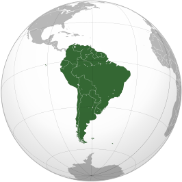

Zuid-Amerika

Zuid-Amerika is een continent op het zuidelijk halfrond, ten zuiden van Noord-Amerika en ten noorden van Antarctica. Het continent wordt in het westen door de Grote Oceaan en in het oosten door de Atlantische Oceaan begrensd.
Het totale landoppervlakte van Zuid-Amerika is 17.840.000 vierkante kilometer, verdeeld over 13 onafhankelijke staten. Er wonen 418 miljoen mensen.